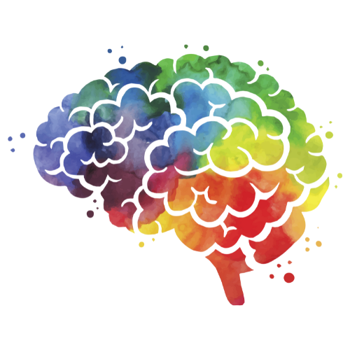

Computer Science and Information Technology
Be a part of the rapid evolution in technology.
Mathematics
Solving the complex problems.
Natural Sciences
Contributing to the advancement of scienece.
Behavioral Sciences
Helping others improve.
Humanities and Social Sciences
Studying a diverse array of various groups.
Fine and Performing Arts
Future artists and actors.